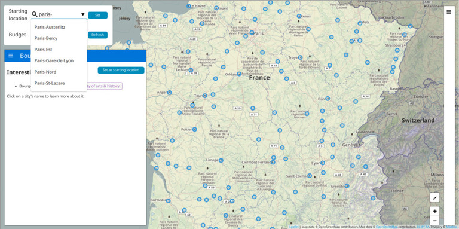
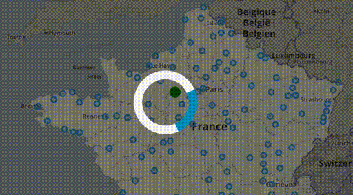
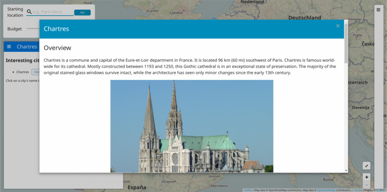
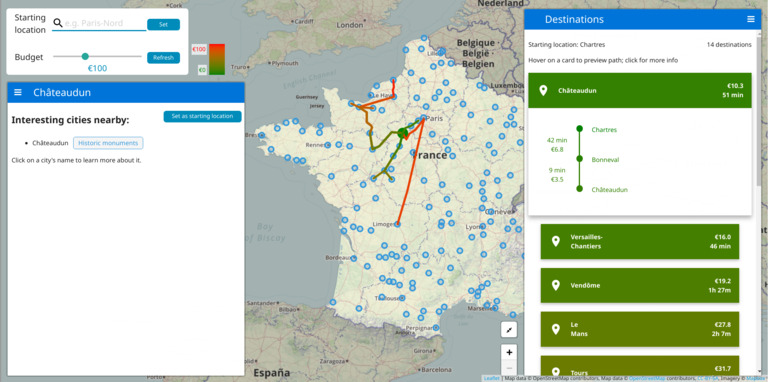

Is traveling and discovering new places and people your
passion?
Do you want to feed that passion without burning
through your pocket?
As a group of students, this is the situation we found ourselves in: eager to go on trips, but with the need to balance our trips and spending.
With that in mind, we built this application that lets you visualize and easily decide which city to visit in France, based on the budget you want.
On the map, you can see all the stops near important cities as blue markers. If you zoom in, you can also see other, less important stops. Important cities are simply historic cities (cities with historical monuments) or cities that are classified by France as Villes d'Art et d'Histoire
You can select your budget for the trip by using the scroller on the top left corner and the starting station by filling the text box right above it. You can also select a starting station from the map, by clicking on a city's marker then pressing the "Set as starting location" button.
By selecting the starting station, you should see all the possible routes you can take with the chosen budget. The colors used for the edges reflect the price of the trip to a linked station. The closer the color to red, the closer it is to your limit budget. Similarily, the closer it is to green the cheaper the trip price is. Note that you can always check the legend next to the scroller.
Clicking on a stop will show some additional information on a sidebar to the left, such as interesting cities that can be accessed once you're at selected stop.
There, you can click on a nearby city's name in that list to show a short summary about the city, as well as a list of monuments you can visit there.
An alternate view is also offered to view detailed routes info: the right sidebar will show you a sorted list, and you can expand a specific route you're interested in to view the exact stops and durations/price breakdown. Additionally, hovering your mouse on one of the items will preview that path on the map (and in reverse, clicking on a path on the map will open that item's details view in the right sidebar).
That's it for the usage instructions! We tried to make the tool as friendly and useful as possible. You can find the interactive tool just below, so please feel free to take it for a spin. We hope you enjoy it and find it useful!
We unfortunately couldn't resolve some issues with
the datasets we're using (obtained from
SNCF).
This is mostly due to (1) incomplete or outdated data
offered by SNCF; (2) severe inconsistencies between the
data sources.
We also had to use the full prices for the tickets, as that
was the only consistent data point we could access.
You might notice that your favorite metro stop is missing,
or that some routing paths are not present when they should
be.
We did our best to fix as many of these issues as
possible, and hope you'll enjoy interacting with our tool.
(In case we find more consistent data sources, we'd also
love to adapt our tool to use these instead.)